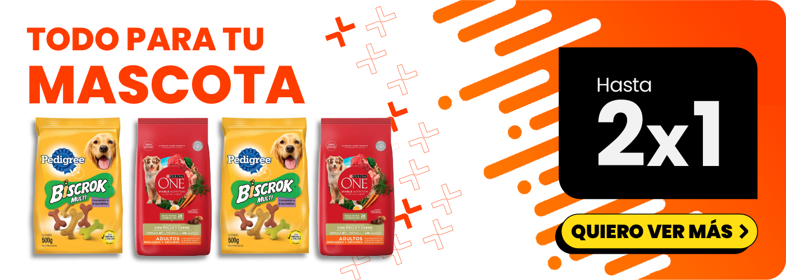
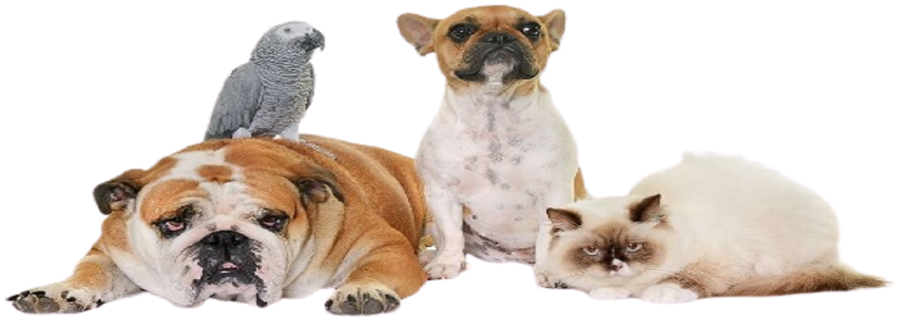
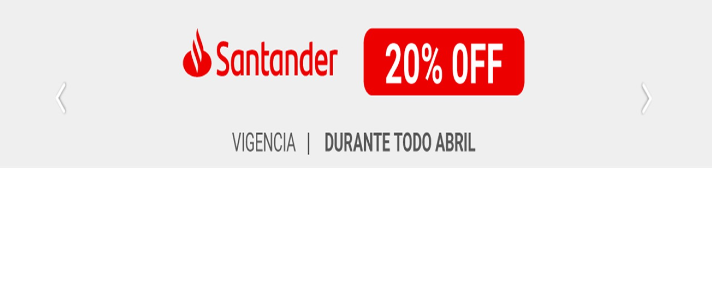

OFERTAS

PROMOCIONES

¿Por qué es importante que los niños aprendan a interactuar con sus mascotas? Dado que los niños, sobre todo entre los 2 y los 5 años, comparten espacios privados y públicos con los animales, es muy importante que aprendan a interactuar con sus mascotas y aún más con los animales o mascotas ajenas. Las mascotas son seres vivos y como tal poseen comportamientos particulares dependiendo de cada especie y raza. Es importante tener en cuenta que en nuestro país hay gran cantidad de animales sueltos sin propietario en la vía pública, representando un gran riesgo. Estos animales pueden sentirse amenazados debido a su condición de desamparo y pueden atacar a personas desprevenidas y sobre todo a niños. ¿Cuándo pueden ocurrir las lesiones producidas por mascotas? Las lesiones producidas por mascotas no siempre son resultado de una agresión o ataque. Pueden también ser consecuencia de juegos u ocurrir sin intención de causar daño. ¿Cómo prevenir estas lesiones? Para prevenir debemos tener en cuenta cuáles son las características y las diferentes conductas de cada especie y razaal elegir una mascota. Es importante precisar las particularidades de cada núcleo familiar y el espacio físico que posee. ¿Qué hacer frente a una lesión producida por una mascota? Cualquiera sea el origen y la magnitud de la lesión (incluyendo rasguños o escoriaciones), el animal que las provocó debe estar en observación por médico veterinario durante un período de 10 días para controlar si tiene rabia. Controlar a las mascotas
En personas con dificultades motrices, el movimiento del equino es fundamental, pues produce sensaciones muy parecidas a las que sentimos los humanos al caminar, por lo que el paciente vuelve a familiarizarse con este movimiento. El andar del caballo produce vibraciones que se transmiten a la médula, por lo que el cerebro recibe los mismos estímulos que si estuviera caminando. Otra aplicación de la equinoterapia se da en aquellos jóvenes y niños que sufren de problemas de relacionamiento y comportamiento, como el autismo, pues esta terapia fomenta la autoestima, corrige problemas de conducta, disminuye la ansiedad y estimula la concentración y la memoria.Las personas que pueden verse beneficiadas por la equinoterapia son aquellas que sufren de espina bífida, esclerosis múltiple, distrofia muscular, ceguera, sordera, amputación de miembros, lesiones medulares, retraso mental, parálisis cerebral, Síndrome de Down, adicciones, anorexia/bulimia y diversos problemas de adaptación social, entre otros. Es importante destacar que la equinoterapia es un método complementario, y el tratamiento de las enfermedades mencionadas con anterioridad no puede estar enfocado únicamente en esta terapia.